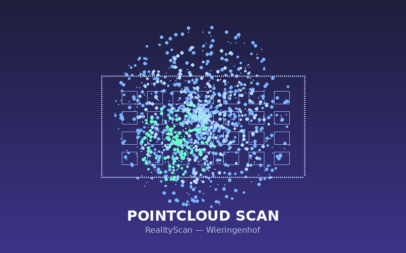
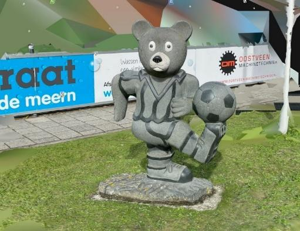
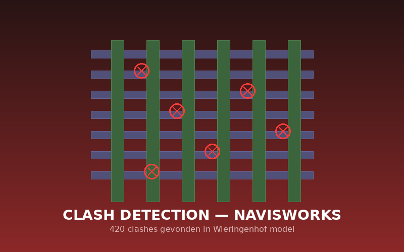
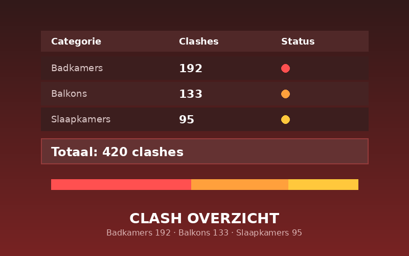
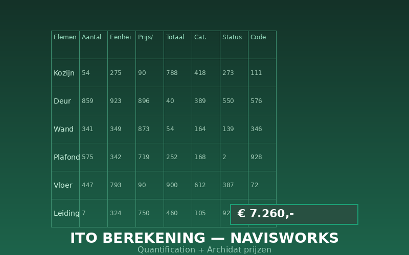
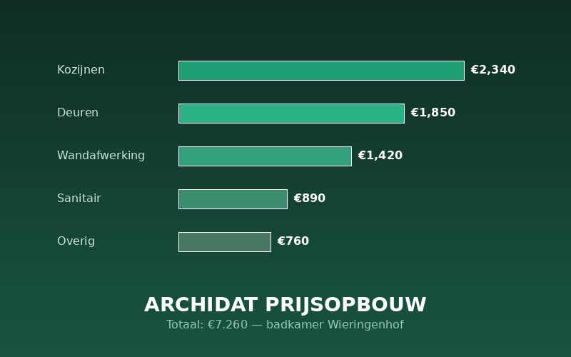
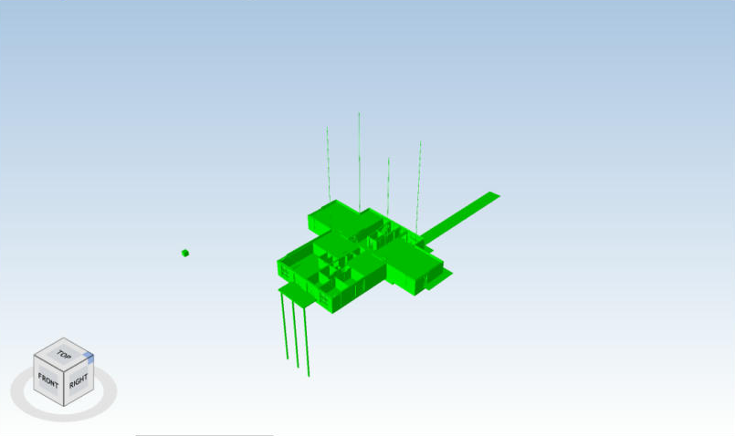
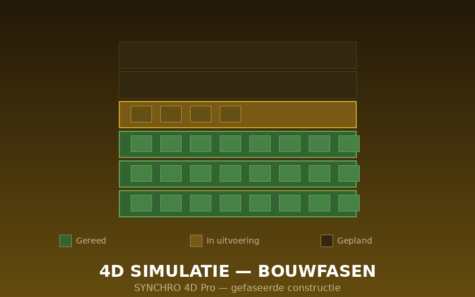
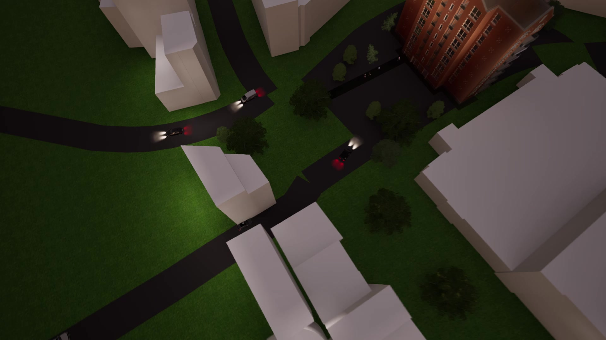
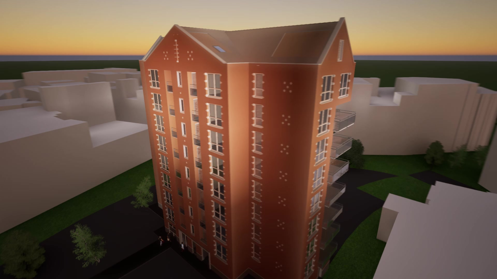

Wieringenhof — BIM Weekopdrachten
In het vak DATA 2 heb ik wekelijks opdrachten gemaakt rondom het Wieringenhof-project. Van pointcloud-scanning en clash detection tot 4D-planning en VR-visualisatie — elke week een andere BIM-toepassing op hetzelfde gebouw.
Pointcloud — RealityScan
Met de app RealityScan heb ik een 3D-scan gemaakt van het standbeeld bij VV de Meern. Vanuit 29 foto's is een gedetailleerde pointcloud gegenereerd die als 3D-model bekeken kan worden.

📷 Voeg afbeelding toe:afbeeldingen/wieringenhof/
pointcloud_1.png

📷 Voeg afbeelding toe:afbeeldingen/wieringenhof/
pointcloud_2.png
Clash Detection — Navisworks
Met Navisworks Manage heb ik clash detection uitgevoerd op het Wieringenhof BIM-model. Er zijn 3 clash tests gedraaid op verschillende ruimtes. In totaal zijn er 420 clashes gedetecteerd — botsingen tussen bouwkundige, installatietechnische en constructieve elementen.

📷 Voeg afbeelding toe:afbeeldingen/wieringenhof/
clash_navisworks.png

📷 Voeg afbeelding toe:afbeeldingen/wieringenhof/
clash_detail.png
| Clash test | Ruimte | Clashes |
|---|---|---|
| Test 1 | Badkamers | 192 |
| Test 2 | Balkons | 133 |
| Test 3 | Slaapkamers | 95 |
ITO Begroting — Navisworks Quantification
Via Navisworks Quantification heb ik hoeveelheden uit het BIM-model geëxporteerd. Deze data is gekoppeld aan kostprijzen uit de Archidat-database om een ITO-begroting op te stellen voor een standaard badkamer.

📷 Voeg afbeelding toe:afbeeldingen/wieringenhof/
ito_navisworks.png

📷 Voeg afbeelding toe:afbeeldingen/wieringenhof/
ito_archidat.png
4D BIM Planning — SYNCHRO 4D Pro
In SYNCHRO 4D Pro heb ik een 4D-planning gemaakt voor de 5e verdieping van het Wieringenhof. Het BIM-model (15.000+ onderdelen) is gekoppeld aan een planning op basis van de STABU-indeling. Hiermee kun je stap voor stap zien hoe het gebouw wordt opgebouwd.

📷 Voeg afbeelding toe:afbeeldingen/wieringenhof/
4d_synchro.png

📷 Voeg afbeelding toe:afbeeldingen/wieringenhof/
4d_planning.png
VR/AR Visualisatie — Twinmotion
Met Twinmotion heb ik een VR-video gemaakt van het Neude-plein in Utrecht. Een FBX-model is geïmporteerd en omgezet naar een Full HD video van 35 seconden. Het lichtere model (88 MB FBX) zorgde voor betere performance.

📷 Voeg afbeelding toe:afbeeldingen/wieringenhof/
vr_twinmotion.png

📷 Voeg afbeelding toe:afbeeldingen/wieringenhof/
vr_neude.png